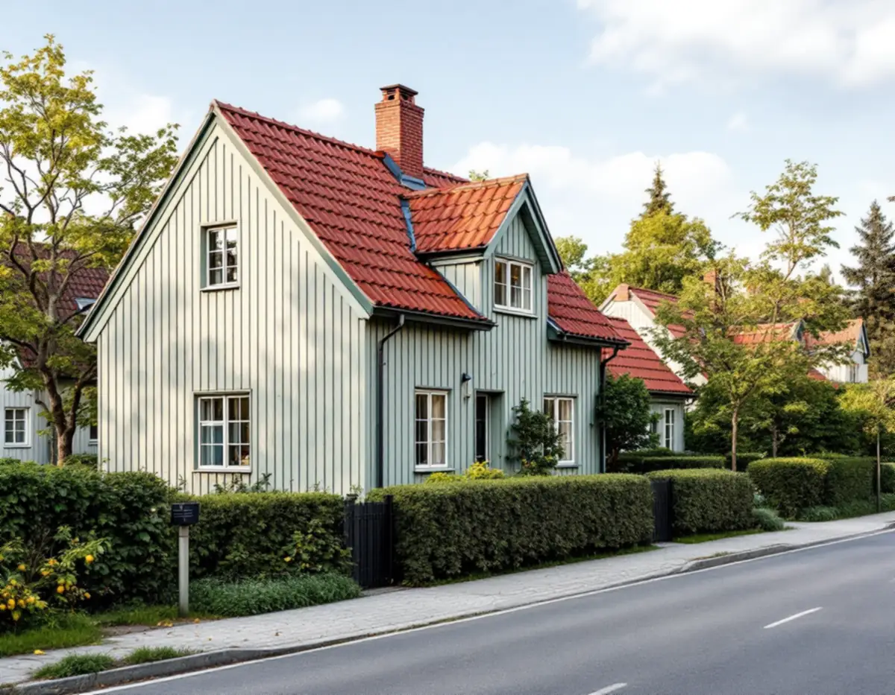
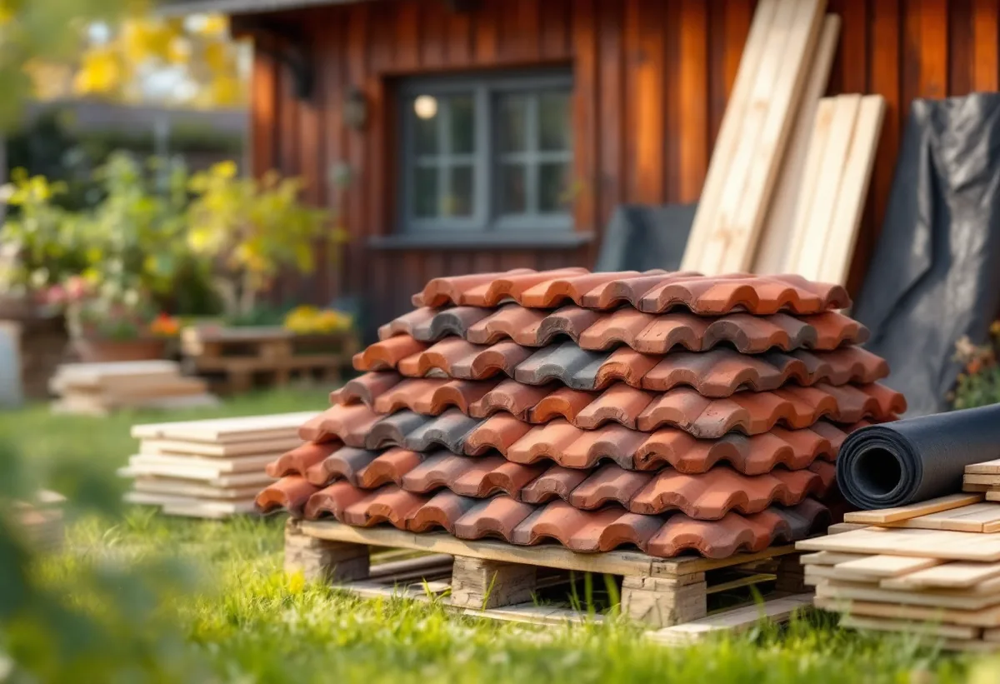
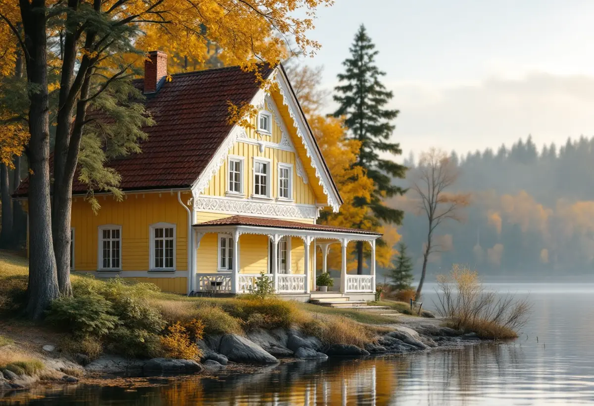

Karta och ritning
Vi kollar Stadsmuseets karta och tar gärna fram husets typritning.
Farsta stadsdelsområde har drygt 4 700 småhus, och drygt 3 800 av dem ägs med äganderätt. En stor grupp är småstugorna i Tallkrogen med tak av rött lertegel, en annan är sekelskiftesvillorna och sommarnöjena längs Magelungen. En takrenovering i Farsta handlar därför oftast om att lägga om ett gammalt tegeltak på ny papp och läkt, inte om att byta material.

I början av 1920-talet tog Stockholm fram ett system där familjer med små inkomster kunde bygga sitt eget egnahem. Staden organiserade arbetet, ritade typhus och skrev utförliga byggbeskrivningar. De första stugorna stod klara 1927 i Pungpinan och Olovslund, och därefter följde bland annat Norra Ängby, Enskedefältet och Tallkrogen.
Tallkrogen fick en egen plan. Gatorna lades ut i ellipser, som löparbanor på en idrottsarena, och husen i varje kvarter fick samma storlek, höjd och avstånd till gatan. Det är därför ett tak i Tallkrogen syns så tydligt: när en stuga får ett tak som avviker märks det längs hela gatan.
Stadens statistik för 2024 visar 945 småhus i Tallkrogen. Nästan alla, 941 stycken, ägs med äganderätt. Det betyder att det är du som ägare, inte en förening, som bestämmer när taket ska renoveras och hur.

Småstugorna skulle vara billiga och lätta att bygga. Småstugebyrån gav därför ut kataloger med ett begränsat antal hustyper i ett, ett och ett halvt eller två plan. Husen var av trä med stående panel, och taken täcktes med enkupigt eller tvåkupigt rött lertegel. Stadens vägledning visar som exempel ett ett och ett halvplanshus med mansardtak klätt i tegel.
I slutet av 1970-talet samlade Stadsbyggnadskontoret alla typritningar från 1927 till 1957 för att ge underlag till den som vill ändra sin stuga. För oss är ritningen ett bra stöd före en omläggning: den visar ursprunglig takvinkel, takfotens utsprång och var kuporna satt. Har taket fått en ny kupa eller ett annat utsprång genom åren ser vi det direkt.
Lertegel håller länge. Det som är slut på en stuga från 1930- eller 1940-talet är oftast det som ligger under: läkten, underlagspappen och plåten runt skorsten och kupor. En takrenovering i Tallkrogen börjar därför med att pannorna tas ner och sorteras. Hela pannor läggs åt sidan, spruckna byts ut.
Sedan läggs ny papp och ny läkt, och de gamla pannorna kommer tillbaka upp. Räcker de inte till kompletterar vi med begagnade eller nya pannor av samma modell. På ett mansardtak läggs de nya pannorna gärna på den del som syns minst, så att gatufasaden behåller sitt gamla tegel.
Stadens vägledning för småstugeområdena rekommenderar att karaktärsskapande material, kulörer och byggnadsdelar tas till vara eller återskapas vid renoveringar. Rött tegel på ett rött tegeltak är det enklaste sättet att följa den.
Farsta har också en äldre historia. Kring sekelskiftet 1900 lockade AB Södertörns villastad med frisk luft och natur, och när Nynäsbanan öppnade 1901 blev det lättare att ta sig till staden. Längs Magelungens strand ligger flera hus från den tiden, bland annat grosshandlare Elliots gulmålade villa från 1910 och sekelskiftesvillan Dagaborg. I backen ner mot sjön finns fler sommarnöjen, några med snickarglädje.
Sådana hus har mer att hålla reda på än en småstuga: vindskivor med profiler, kupor, burspråk och ibland ett tak som byggts om i flera omgångar. Vid en omläggning mäter vi upp detaljerna innan de tas ner, så att nya vindskivor och plåtdetaljer får samma form som de gamla.
Lägger du om taket med samma material behövs inget lov. På ett en- eller tvåbostadshus behövs enligt Boverket i regel inte heller bygglov för att byta till ett annat taktäckningsmaterial, men ändringen ska vara varsam och anpassad till omgivningen.
Undantaget är byggnader och områden som är särskilt kulturhistoriskt värdefulla. Där gäller utökad lovplikt, och då krävs bygglov även för sådant som annars är lovfritt. Staden räknar Tallkrogen som kulturhistoriskt värdefull miljö, och Stadsmuseets klassificeringskarta ger en första bild av hur just ditt hus är klassat. Vill du byta material eller ändra takformen tittar vi på kartan och detaljplanen tillsammans innan något beställs.

Vi kollar Stadsmuseets karta och tar gärna fram husets typritning.
Papp, läkt och ventilation kontrolleras inifrån.
Pannorna tas ner, sorteras och staplas på tomten.
Ny underlagspapp, ströläkt och bärläkt monteras.
Gamla pannor läggs tillbaka och kompletteras med samma modell.
Beslag kring skorsten och kupor görs om, rännor rensas.
Skatteverket räknar reparation och byte av takpannor, underlagspapp och hängrännor på ett småhus som rotarbete när du äger huset och bor i det eller har det som fritidshus. Avdraget är 30 procent av arbetskostnaden, högst 50 000 kronor per person och år och högst 75 000 kronor tillsammans med rutavdrag. Material och resor ger inget avdrag, enligt Skatteverket.
Geal drar avdraget direkt på fakturan. Är ni flera ägare har var och en sitt eget tak för avdraget. Läs mer under rotavdrag för takarbete.
Kostnaden i Farsta styrs av takets yta och lutning, om det är ett mansardtak, hur många pannor som går att återanvända, antalet kupor och hur mycket plåt som ska göras om. Läs mer om vad en takrenovering kostar eller räkna på ditt tak i kalkylatorn för takbyte.
Takbyte, besiktning och plåtarbeten.
Takläggare i Farsta →Så fungerar en omläggning.
Takrenovering och takomläggning →Det här styr priset.
Vad kostar en takrenovering? →Räkna på takytan och ROT.
Takbyte-kalkylator →Trädgårdsstad med lertegel.
Takrenovering i Enskede →Stuvsta, Snättringe och Skogås.
Takrenovering i Huddinge →Solberga, Raksta och Brevik.
Takrenovering i Tyresö →